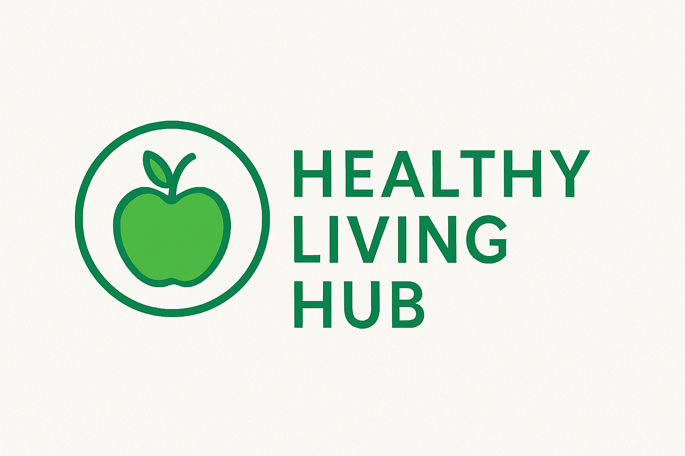
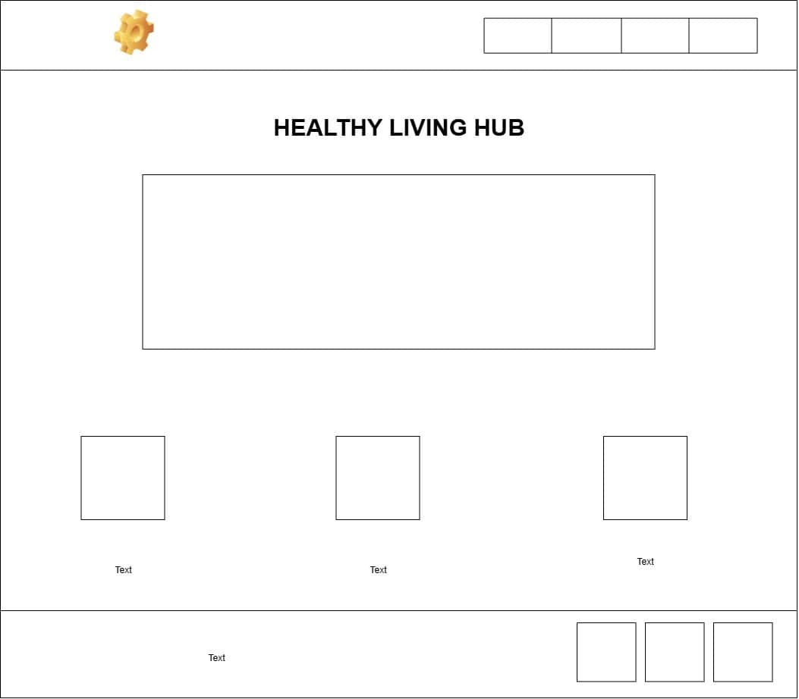
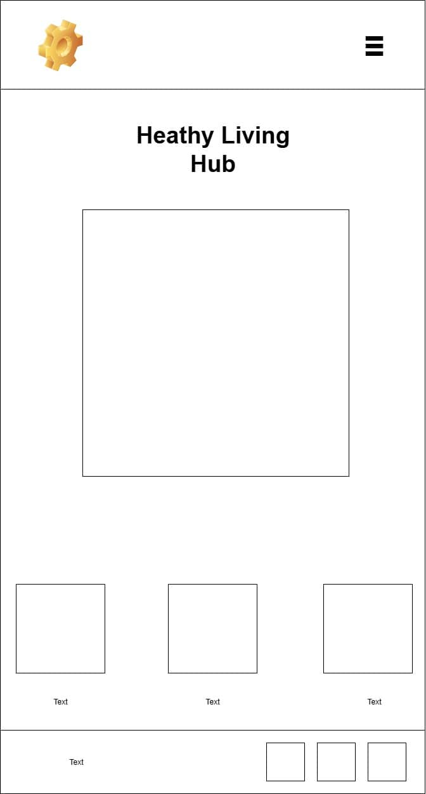

Site Name: Healthy Living Hub
The Healthy Living Hub would be an informative website that promotes healthy lifestyles through nutrition, exercise and wellness habits. It is aimed at young adults and families who have a desire to improve their health using practical, evidence-based advice and simple tools.
Optional domain availability: healthy-living-hub.org
Site Purpose:
The site provides a hub for individuals who want to improve physical health by providing tips for healthy eating habits and work-out recommendations, it also includes a form for complaints or suggestions.
Scenarios:
- What is the best workout for me according to my age?
- What good eating habits do I need in order to improve my personal hygiene?
- Where can I voice my complaints about a issue I had will using the website?
Color Schema:
- Primary: #005f3c(Dark Green)
- Accent: #6dbe45(Bright Leaf Green)
- Background: #f8f9f5(Off-White)
Typography:
- Header: Open sans
- Subheading: Montserrat
- Body: Roboto
Wireframe:
- Desktop view: 
- Mobile view: 